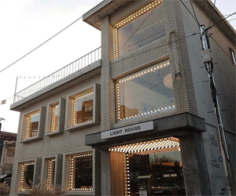
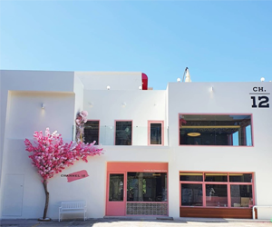
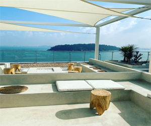

메인메뉴
먹거리
음식점
카페
관광지
바다
문화
커뮤니티
자유게시판
리뷰

상호명 : 일광전구 라이트하우스
주소 :
인천 중구 참외전로174번길 8-1
전화번호 : 010-3185-xxxx(휴대전화 비공개)
평점 : 4.45/5
TV방영 : tvN 드라마 사이코지만 괜찮아 촬영지,
2018 KBS 생생정보 등

상호명 : 채널 트웰브
주소 :
인천 중구 차이나타운로59번길 16 채널 트웰브
전화번호 : 032-773-0120
평점 : 4.57/5
TV방영 : X

상호명 : 바다앞테라스
주소 :
인천광역시 중구 영종동 1-20
전화번호 : 032-747-0137
평점 : 4.36/5
TV방영 : X